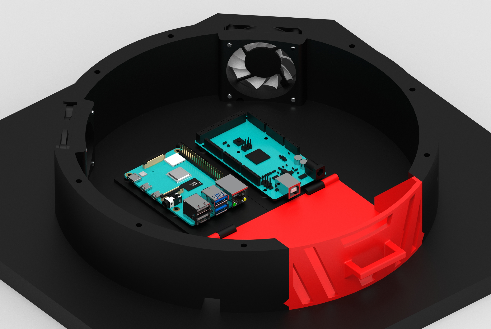

SCARA - widok ogólny
Na powyższym obrazie wyrenederowanym w oprogramowaniu KeyShot
można zaobserwować widok ogólny robota. Kinematyka jaka została zastosowana w tym robocie to SCARA.
Wybrana została ze względu na sztywność. Ponadto w przemyśle, kinematyka SCARA jest powszechnie używana
w procesie paletyzacji, czyli przenoszenia elementów z jednego miejsca na drugie - co dokładnie
ma ten robot wykonywać.

Podstawa robota oraz elektronika
W podstawie robota znajduje się cała elektronika sterująca robotem -
Raspberry Pi 4 oraz Arduino Mega. Arduino Mega zarządza pracą robota - steruje silnikami i
elektromagnesem, odbiera sygnały z krańcówek itp. Mikrokomputer Raspberry Pi oblicza trajektorię
efektora robota, a także zarządza pracą drukarki 3D poprzez system Octoprint .
Widok oraz przekrój napędu członu pierwszego
Napęd pierwszego członu (obrót kolumny) stanowi silnik krokowy
o dużym momencie, który używa wydrukowanej na drukarce 3D przekładni planetarnej. Aby ruch był możliwy,
użyto zestawu łożysk - dwóch oporowych oraz jednego promieniowego, które zostały osadzone na
wydrukowanych elementach, a następnie ściśnięte śrubami. W koła planetarne wciśnięto łożyska, a w łożyska
wały o średnicy Ø8. Tak wykonany napęd zapewnia przełożenie 1:5, a w związku z tym duży zapas momentu
oraz precyzyjne sterowanie.

Pokaz działania przekładni planetarnej
Powyżej pokazano animację przedstawiającą pracę przekładni planetarnej.
Powyższy kadr przedstawia fragment członu pierwszego od dołu. Koło słoneczne napędzane jest przez silnik,
koła planetarne umocowane są na prętach, a koło zewnętrzne przekładni przymocowane jest do kolumny robota,
powodując jej ruch. Warto wspomnieć, że przekładnia została wydrukowana w całości na drukarce 3D, zatem nie
wymaga montażu. Odpowiednio skonfigurowana drukarka 3D pozwala na wykonanie takiej przekładni z minimalnymi
luzami, które nie wpływają negatywnie na ruch robota. Kołą zębate przekładni mają zęby skośne, zmieniające
kierunek skosu w połowie wysokości koła - dzięki temu koła zębate nie wypadają z przekładni.
Napęd osi Z
Napęd drugiego członu realizowany jest za pomocą silnika krokowego oraz śruby trapezowej
o niskim skoku. Zastosowano nakrętke trapezową z materiału POM ze sprężyną kasującą luz. Zastosowano również cztery
prowadnice liniowe Ø8. W ten sposób człon drugi, a wraz z nim człon trzeci i czwarty jest samohamowny - nie
opada po zaniku zasilania.
Napęd członu trzeciego
Napęd członu trzeciego - silnik krokowy, został zamocowany w kolumnie, w osi kolumny
robota. Użyto paska GT2 aby umożliwić ruch członu trzeciego. Zastosowano takie rozwiązanie po to, by skupić masę w
osi kolumny robota - minimalizując momenty zginające na ramieniu robota.

Budowa złącza trzeciego i czwartego
W napędach złącza trzeciego i czwartego zastosowano bardzo podobny zestaw łożysk
jak w przypadku złącza pierwszego - dwa oporowe i jedno promieniowe. Takie rozwiązanie zapewnia dokładny i płynny ruch.
Na powyższym obrazie przedstawiono również prowadzenie przewodów.
Efektor
W efektorze robota znajduje się elektromagnes, za pomocą którego przenoszone są
platformy robocze drukarki 3D (w platformach znajdują się specjalne metalowe blaszki). Na górnej części efektora
zamotowano również kamerkę, która służy do podglądu procesu druku.
Zmiana podstawy drukarki delta
System wymiany platformy roboczej wymagał również zmiany podstawy drukarki 3D delta.
Szklany stół zamieniono na specjalnie wyciętą płytę z laminatu FR4. Dzięki temu platforma jest lekka, co ułatwia
jej transport za pomocą robota. Dodatkowo w podstawie zamontowano trzy elektromagnesy, które w czasie druku
trzymają platformę nieruchomo. Po skończonym wydruku, elektromagnesy puszczają stół, a następnie elektromagnes
z robota zabiera platformę. Elektromagnesy w podstawie drukarki zamontowane są tak, że dużą powierzchnią
dotykają profili aluminiowych, co pozwala na efektywne odprowadzanie ciepła.
Zestawienie elementów drukowanych
Na powyższym obrazie przedstawiono wszystkie elementy wykonywane w technologii
druku 3D, składające się na konstrukcję niniejszego robota. Zrzut ekranu wykonano w programie Ultimaker Cura.
Wydrukowanie tych elementów z filamentu PLA, z odpowiednimi ustawieniami, zapewnia wystarczającą wytrzymałość
oraz sztywność konstrukcji. Tym samym znacząco obniża koszty produkcji robota względem np. frezowania elemnentów
z aluminium.
Prototyp
W ramach projektu wykonano również działający prototyp. Wszystkie elementy robota
zostały wykonane oraz zmontowane według modelu. Robot w takiej konfiguracji jest bardzo sztywny oraz stabilny
- za sprawą dużej postawy w płyty MDF. Wpływ na stabilność miało również umieszczenie trzech z czterech silników
w osi kolumny robota.

Drukarka 3D + robot
Powyżej przedstawiono pełne stanowisko systemu składające się z drukarki 3D typu
delta oraz robota SCARA.

Pokaz pracy systemu
Na tym filmie zaprezentowano działanie
systemu automatyzującego proces druku 3D.

{kind=link}
{kind=link}
{kind=link}
{kind=link}
{kind=link}
{kind=link}
{kind=link}
{kind=link}
{kind=link}